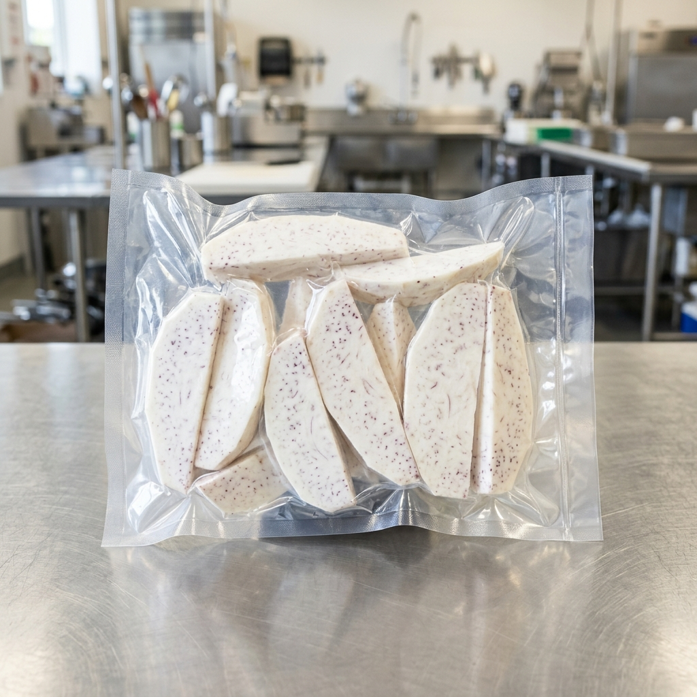
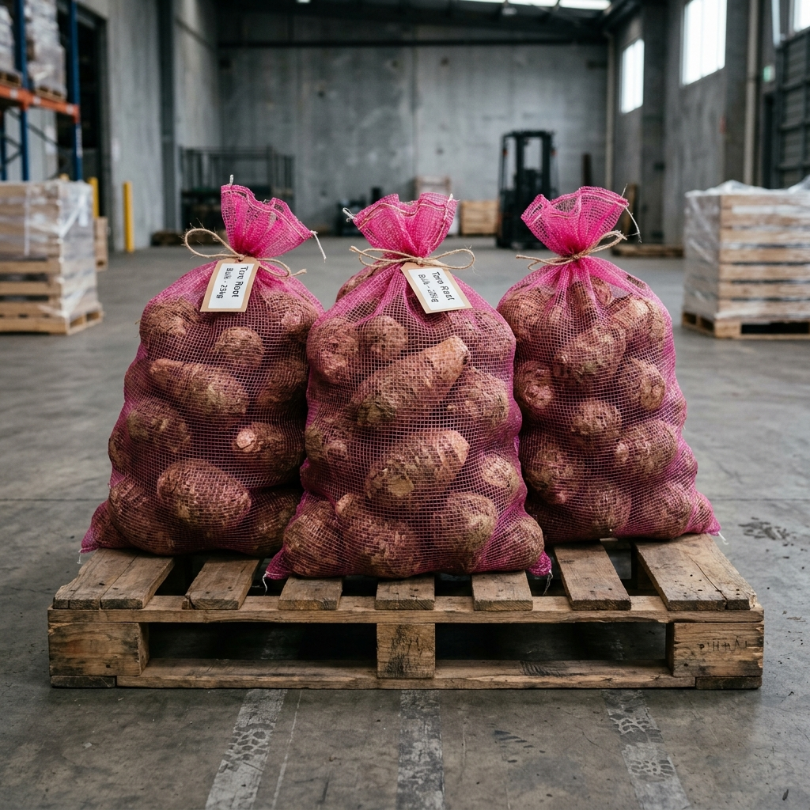

We import, process, and distribute high-quality taro root directly to commercial accounts. Processed, peeled, and vacuum-sealed in-house for uncompromised freshness.
We handle every step of the process at our Artesia facility. This allows us to maintain strict quality control, ensuring you receive the freshest taro possible, ready for immediate use.


We source raw, whole taro roots from dedicated agricultural partners, inspecting every batch for consistency, starch content, and zero defects.
In our FDA registered facility, the taro is peeled, chopped, and immediately vacuum-sealed in commercial-grade packaging, locking in freshness, flavor, and extending shelf life without any additives or preservatives.
Our processing facility meets strict federal and state health standards, ensuring every batch of taro is clean, safe, and ready for commercial retail or food service environments.
We are built to handle B2B volume. From grocery store chains to large restaurant networks in LA and Orange County, we consistently deliver bulk orders on time.
You aren't dealing with a faceless conglomerate. When you call us, you speak directly with the owners who treat your account with urgency and respect.